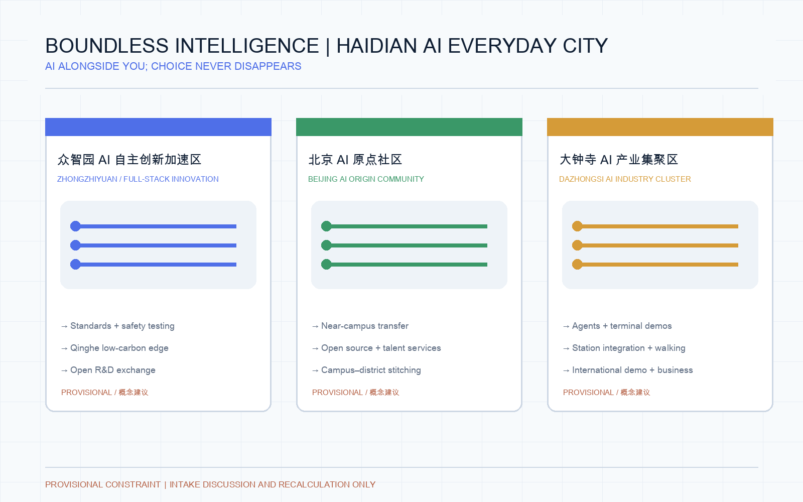

Regional research scope · 43.6 km²
AI ecosystem, three areas and two wings, talent, culture, global cases and future-city strategy.
- Innovation and talent chains
- Open-source and public culture
- Brand and operating model
An offline visual presentation of a concept proposal. GeoJSON, metrics, matrices and self-check results remain the authoritative evidence layer; this page translates the spatial strategy, everyday scenarios and governance boundaries into a readable experience.
Residents can travel, park, shop, dine and access public services without carrying a phone. Face or palm recognition may be offered only with clear consent; physical cards, paper tickets, cash, staff assistance, accessible routes and non-biometric options remain equally legible.
At the AI Origin Community, the entrance explains available methods and data use before a choice is made. Residents may use an authorized face/palm credential, a physical transit card, a paper ticket or staff assistance; the accessible route is visible without making an irreversible decision for the traveler.
Near-campus transfer, open-source publishing, public service desk and talent life services.
Model testing, safety governance, low-carbon computing and standards workshops.
Parking, food, retail, intelligent terminals and international exchange.
Everyday walking, railway memory and blue-green public life.
Explain purpose, scope and retention before face or palm recognition is chosen.
Keep staff support for transit, parking, payment, ordering and public services.
Read only the information needed for the current task; do not default to personal profiling.
Let residents inspect, withdraw and transfer decisions to a person.
Five locally bundled figures translate the same geometry, metrics, matrices and self-check state into a readable urban-design story. They are presentation aids, not substitutes for the structured evidence layer.





The proposal moves from regional AI ecosystem strategy to the overall urban-design framework and then to three detailed areas. Each level is tied to geometry, metrics and implementation dependencies.
AI ecosystem, three areas and two wings, talent, culture, global cases and future-city strategy.
Urban renewal, land-use structure, mobility, municipal support, blue-green network and urban character.
Function, built-form actions, public space, traffic interfaces, AI services and professional follow-up conditions.
The spatial concept is “one belt, three nodes, two cooperating wings, and an AI service layer”. It is a conceptual reference scheme for professional deepening, not a statutory plan.
A garden-like full-stack innovation district for model testing, standards, low-carbon computing and open demonstration.
A near-campus transfer district for universities, open source, talent services, living and public-service interfaces.
An urban intelligent-economy district for products, parking, food, retail, terminals and international exchange.
Intellectual property, legal support, capital, talent and testing services connect the three nodes.
Walking, community services and blue-green public space translate AI capability into everyday experience.
Ten scenario cards connect service users, spatial locations, data boundaries, human review and possible operating partners.
Authorized research, code and model evaluation for developers, enterprises and universities.
Controlled testing of mobility, service and operations agents in public space.
Public-data analysis plus human review for broken walking links.
Housing, learning, food, exercise and social services with human escalation.
Public explanation of standards, trustworthy evaluation and safety governance.
Meeting and demo space for research transfer and responsible innovation.
Aggregated demonstrations of data assets, terminals and content services.
Explains distributed energy, edge computing and public-service infrastructure.
Connects railway heritage, Zhongguancun innovation and AI culture.
Developer events, open-scene days, demos and city experience routes.
The proposal treats AI as a civic service layer: useful for different residents, testable by industry and visible without turning surveillance into a landmark.
All are conceptual proposals requiring heritage, fire, accessibility, copyright and public-participation review.
Current geometry is provisional. Values below support intake review and concept comparison; they must be recalculated after official boundary and key-area files are supplied.
Official boundary and key-area polygons, detailed control plan, road red lines, parcel ownership, municipal and utility conditions, heritage, fire, privacy, accessibility and operating responsibilities.
It does not claim existing biometric deployment, government approval, construction feasibility, investment commitment, precise red lines or final professional conclusions.
compliance_matrix.json covers announcement tasks and agent tasks; standard_matrix.json and design_depth_matrix.json cover professional standards and design depth. Source, metric, geometry and rights records remain in the package.
This page uses local HTML, local images and inline styles/scripts only. The generated cover is a conceptual visual, not current-condition evidence or an official rendering.
Face, palm, plate and payment interfaces are optional concepts. Consent, data minimization, withdrawal, staff assistance, cash, physical tickets and accessible alternatives remain design requirements.